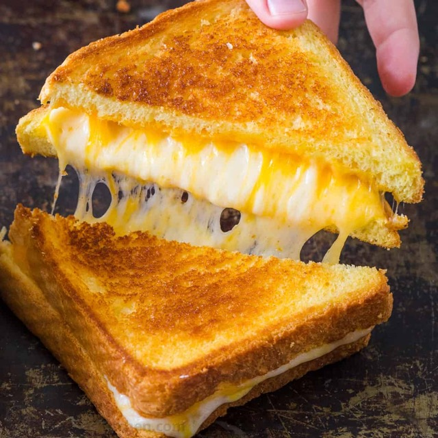

Grilled Cheese Sandwich

Description
A picture of a grilled chese sandwich.
Ingredients
- Bread
- American Cheese
- Butter
Steps
- Spread the button on one side of the bread
- Heat on skillet
- Add cheese
- When bread is starting to turn brown, flip it
- Cook until golden brown on both sides